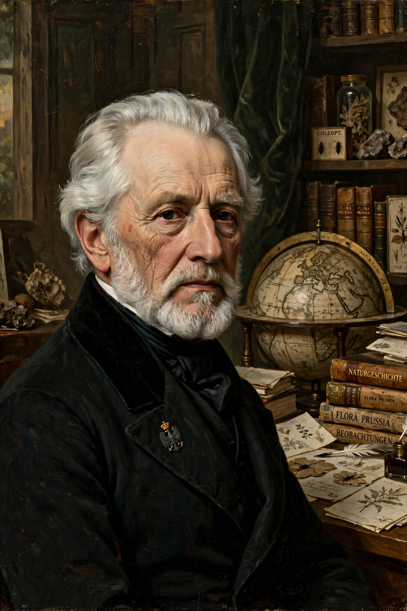

From Wikipedia, the free encyclopedia
| Alexander von Humboldt | |
|---|---|
 | |
| Born | 14 September 1769, Berlin, Kingdom of Prussia |
| Died | 6 May 1859 (aged 89), Berlin |
| Fields | Geography, natural history, botany, geology, meteorology, oceanography |
| Known for | Humboldtian science; Cosmos; biogeography; isotherms; Humboldt Current |
| Relatives | Wilhelm von Humboldt (brother) |
Friedrich Wilhelm Heinrich Alexander von Humboldt (14 September 1769 – 6 May 1859) was a Prussian polymath, geographer, naturalist, explorer, and proponent of Romantic philosophy and science. He was the younger brother of the Prussian minister, philosopher, and linguist Wilhelm von Humboldt (1767–1835). Humboldt's quantitative work on botanical geography laid the foundation for the field of biogeography, while his advocacy of long-term systematic geophysical measurement paved the way for modern geomagnetic and meteorological monitoring.
Between 1799 and 1804, Humboldt travelled extensively in the Americas, exploring and describing them for the first time from a modern scientific point of view. Accompanied by Aimé Bonpland, he journeyed through Venezuela, Cuba, Colombia, Ecuador, Peru, and Mexico, collecting thousands of plant specimens, making astronomical and magnetic measurements, and climbing Chimborazo to a then-record altitude. His description of the journey was published in several volumes over 21 years.
Humboldt saw nature as a web of interconnected phenomena — his "Naturgemälde" — in which climate, altitude, vegetation, and geology interact. He devised isotherms (lines of equal temperature) that enabled climate comparison across continents, recognised vegetation zones by altitude, and warned early about human-caused deforestation and climate change. More species and places are named after Humboldt than after any other person, including the Humboldt Current off South America.
His five-volume work Kosmos (1845–1862) attempted a unified description of the physical universe, from nebulae to the geography of plants, and became one of the most widely read scientific works of the 19th century. Humboldt died in Berlin in 1859 while completing the fifth volume.
Categories: 1769 births | 1859 deaths | German naturalists | Explorers of South America